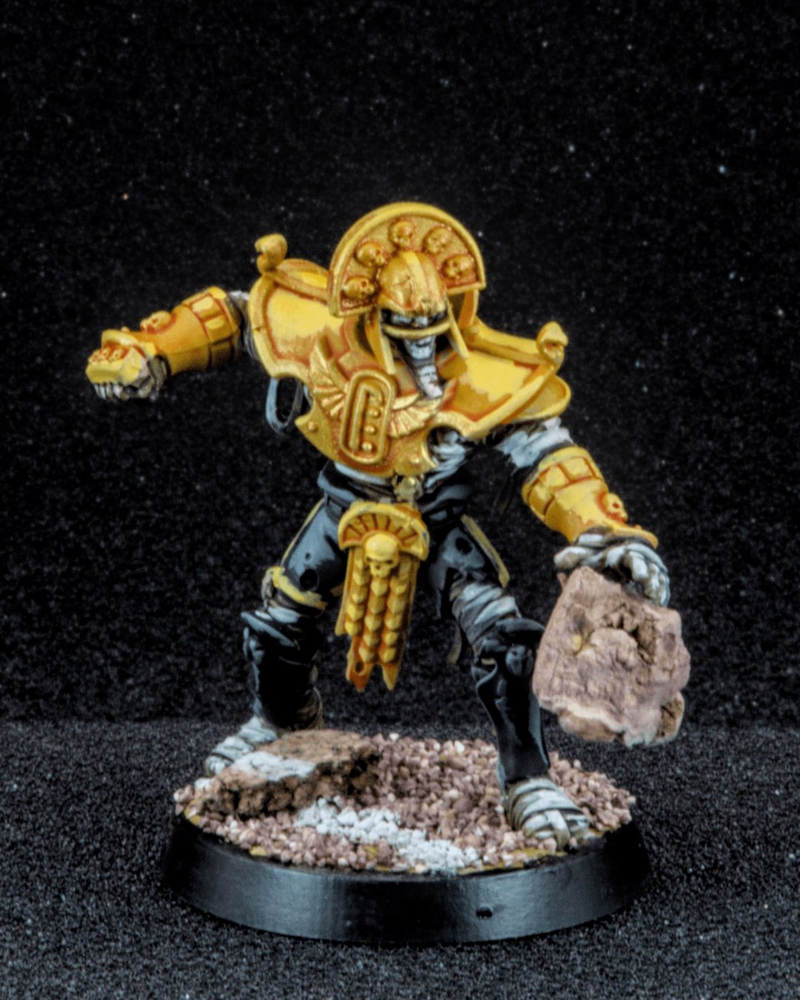
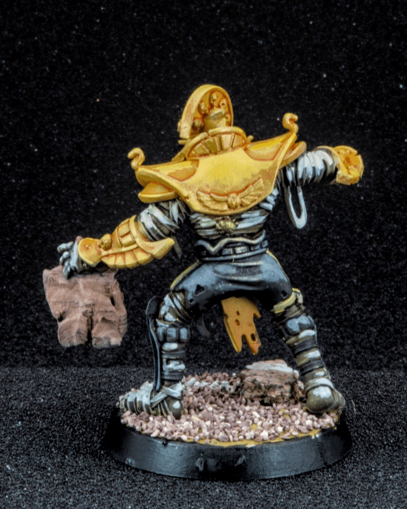
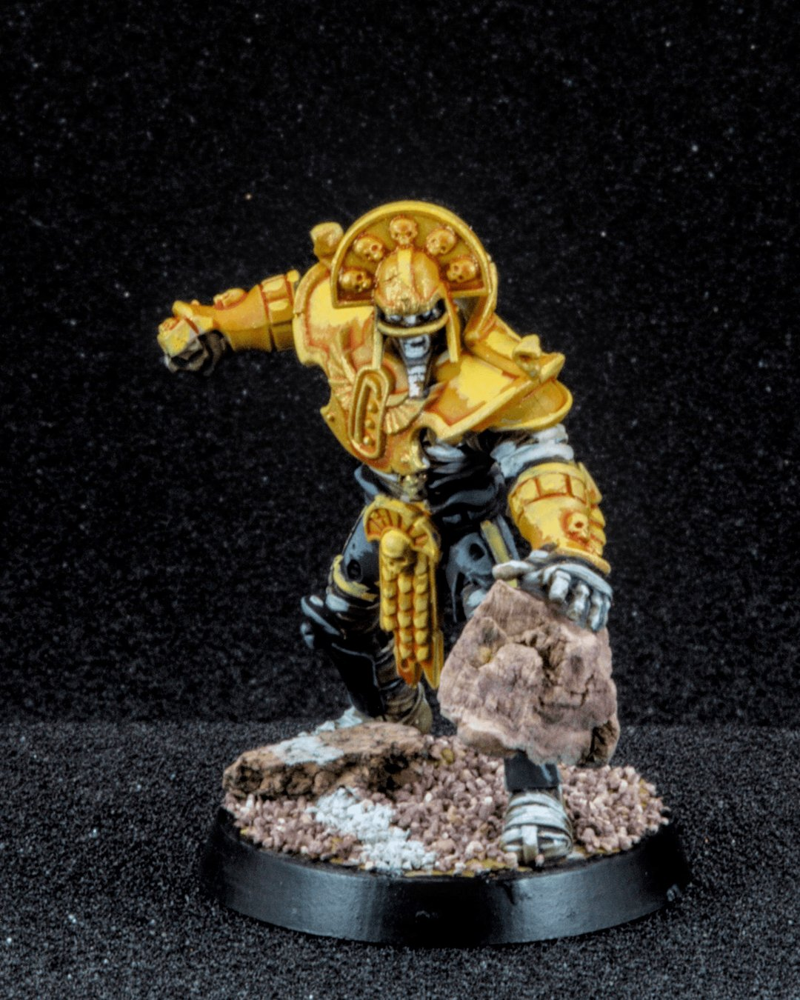
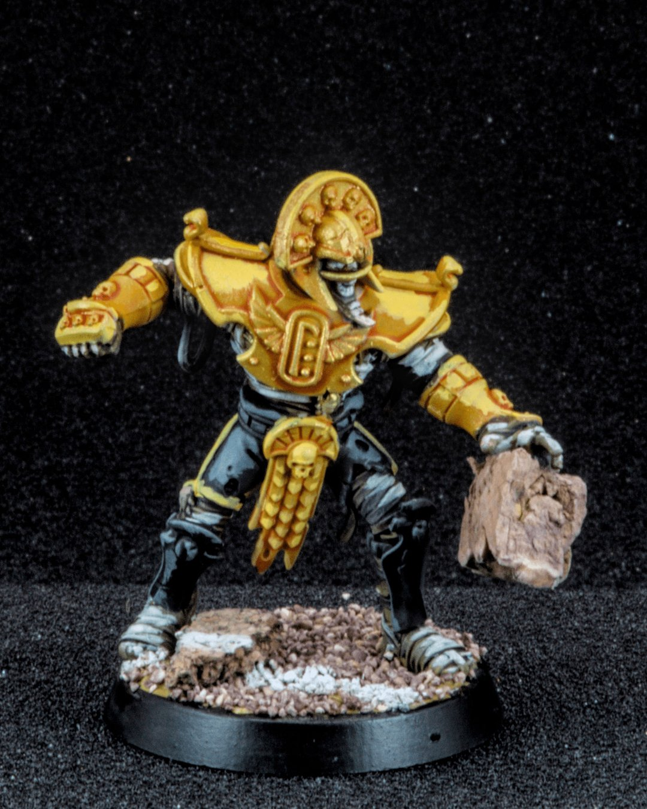
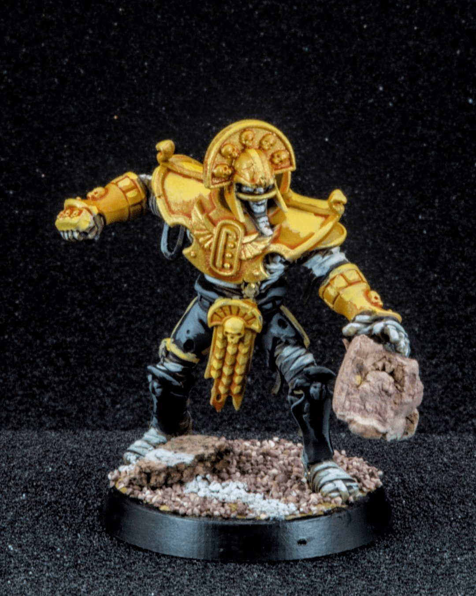
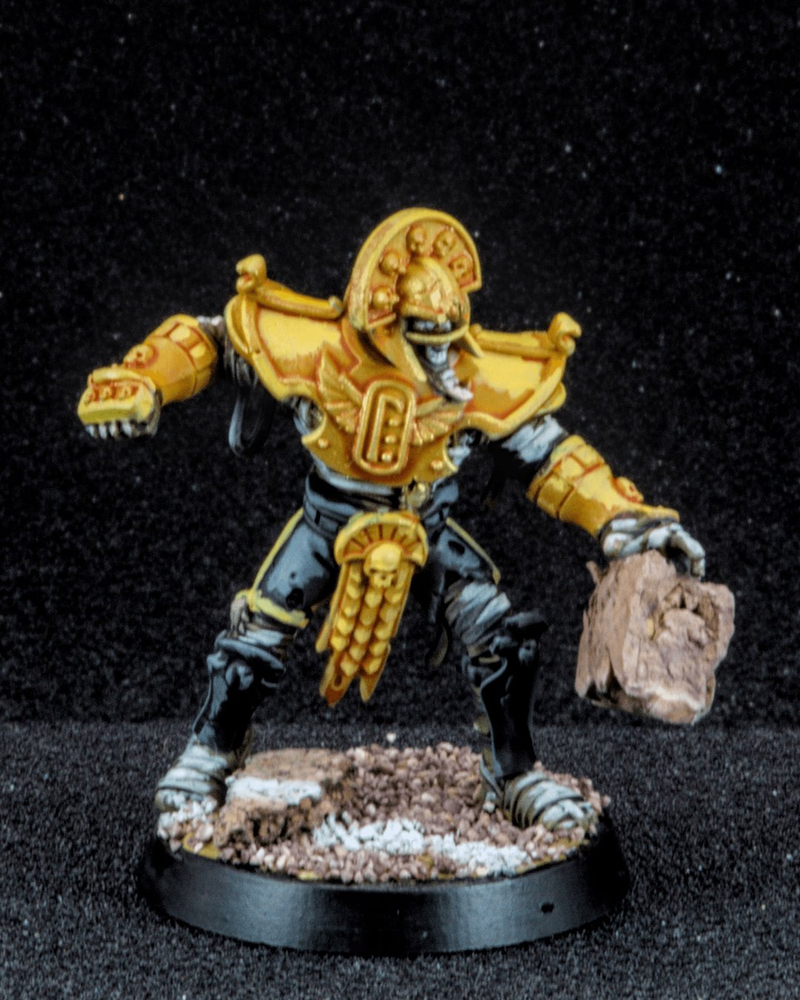

Tomb Guardian
Ancient, silent, and built like a collapsing monument… the Tomb Guardian doesn’t rush, he advances. Slowly. Inevitably. ☠️
In Blood Bowl, “big guys” are usually limited, one hulking anchor per roster. Not here. The Tomb Kings bring four. Four Strength 5 pillars of undeath, no Dodge, no finesse, and famously, no hands. They aren’t here to carry the ball, they’re here to control space, tie up the line, and remind your opponent that movement is optional when you can just remove people from it.
This one might be my favorite of the set, mostly because I glued a large boulder, roughly the size of a small boulder, into his hand. It felt right. The sculpt already had that lumbering, mid-stride menace, so giving him something absurdly heavy to swing just pushed it over the edge. The armor got a warm, sun-bleached gold to contrast the cold stone and dusty base, aiming for that ancient tomb, long forgotten, recently reawakened vibe.
Four big guys on one team is objectively ridiculous. Which, honestly, is exactly why I love them.
#BloodBowl #Warhammer #MiniaturePainting #TabletopGaming #Undead